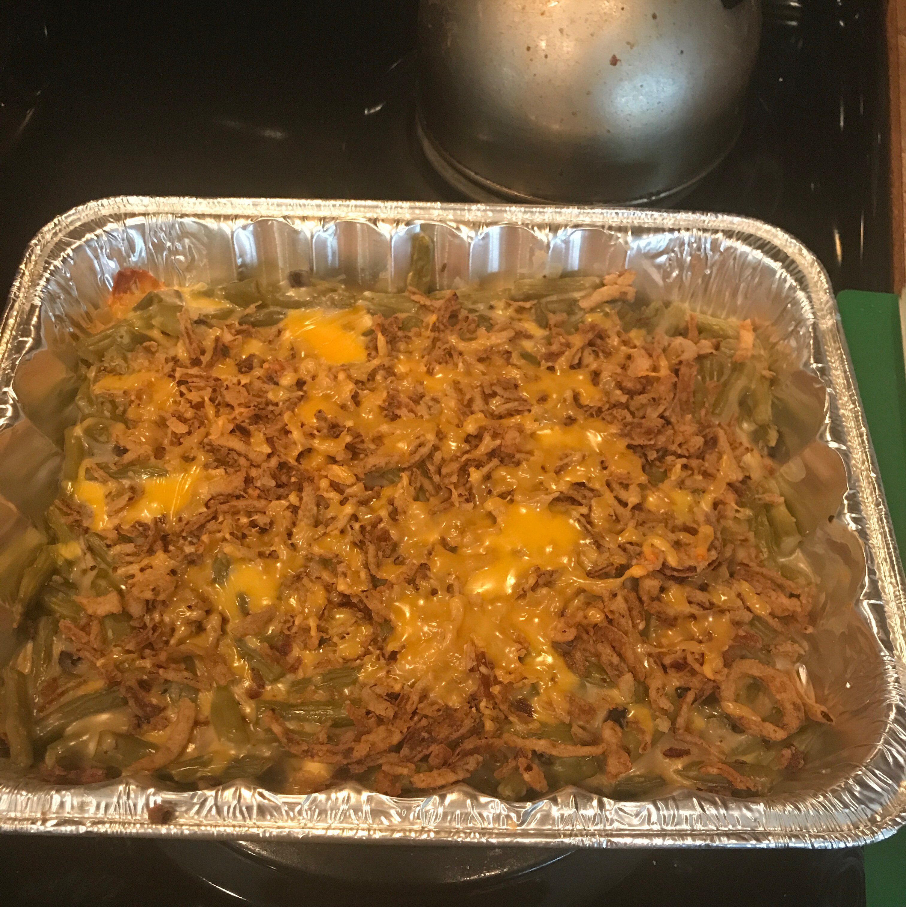

Best Green Bean Casserole

This does not look that appetising
322 calories; protein 6.6g; carbohydrates 20.2g; fat 23.2g; cholesterol 19.8mg; sodium 1068.3mg.
Ingredients
- 2 (14.5 ounce) cans green beans, drained
- 1 (10.75 ounce) can condensed cream of mushroom soup
- 1 (6 ounce) can French fried onions
- 1 cup shredded Cheddar cheese
Steps
- Preheat oven to 350 degrees F (175 degrees C).
- Place green beans and soup in a large microwave-safe bowl. Mix well and heat in the microwave on HIGH until warm (3 to 5 minutes). Stir in 1/2 cup of cheese and heat mixture for another 2 to 3 minutes. Transfer green bean mixture to a casserole dish and sprinkle with French fried onions and remaining cheese.
- Bake in a preheated 350 degrees F (175 degrees C) oven until the cheese melts and the onions just begin to brown.
Back